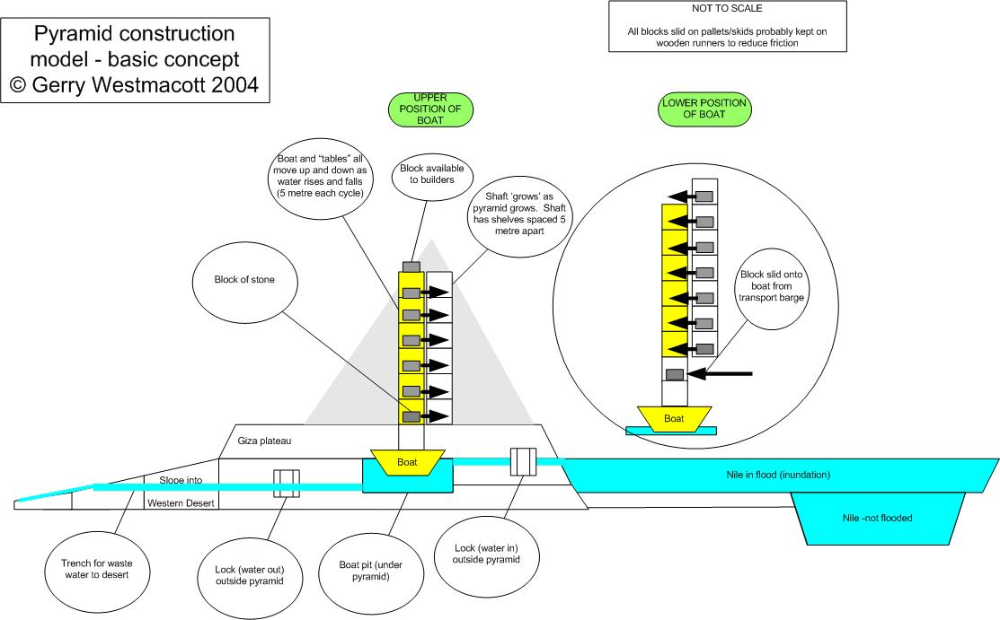

Annex
Theoretical Comparison of Dragging Blocks vs Boat Lift Hoisting
Assumptions and Facts
- Mass of Great Pyramid:
6.5 × 10⁹ kg (6½ million tonnes)
- Centre of gravity (c.g.) of a 4-sided pyramid is ¼ way up the central vertical line
- Effective pyramid height:
145 m, c.g. at 38 m
- Ramp length to midpoint:
400 m (approx. 10° slope)
- Coefficient of friction for dragging:
0.1
Work for Ramp Dragging
Element 1: Potential energy to raise blocks to 38m:
6.5 × 10⁹ × 38 = 2.47 × 10¹¹ m·kg
Element 2: Friction drag along 400m ramp:
6.5 × 10⁹ × 400 × 0.1 = 2.6 × 10¹¹ m·kg
Total Work: 2.47 + 2.6 = ~5 × 10¹¹ m·kg
Case 2 – Using a ‘Boat Lift’
- 8-stage lift (5m steps) reaches 38m (c.g. height)
- Each slide (on/off shelves) averages 2m × 8 stages =
16 m total sliding
- Additional